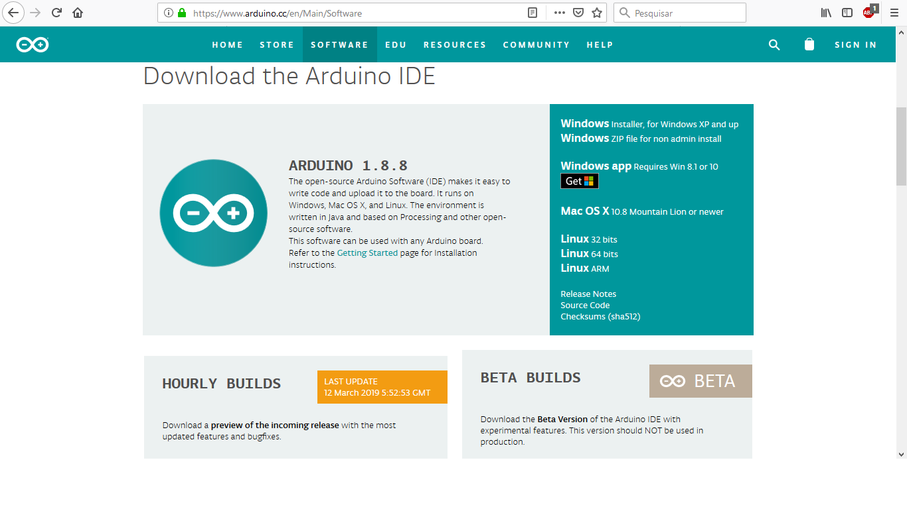
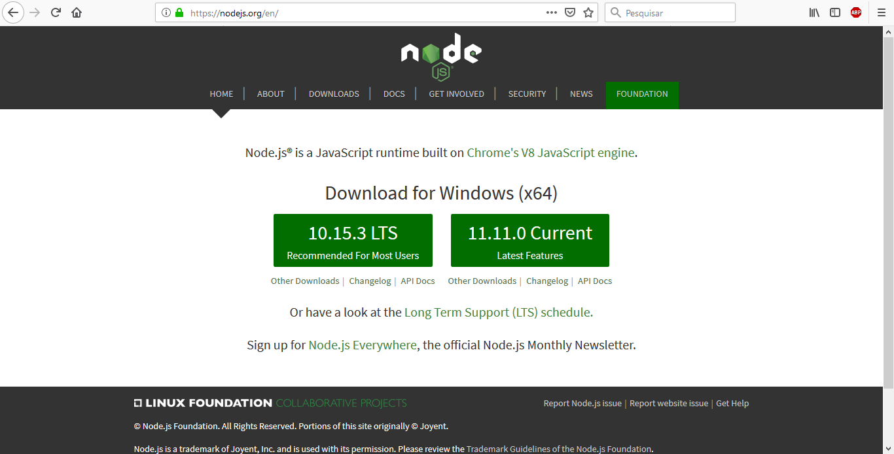

Johnny-Five: programando Arduino com Javascript
Quem sou eu?
Desenvolvedor, estudante de Sistemas de Informação na UFF. Frontend na M4U. Viciado (porém aposentado) em Hackathons, e apaixonado por desenvolvimento e novas tecnologias.
Arduino
(Precisa de apresentação?)

Javascript

Linguagem de programação que nasceu em 95 pra tornar os sites mais interativos
Multiparadigma
Onipresente nos navegadores


E então...

Johnny-Five
"Johnny-Five is an Open Source, Firmata Protocol based, IoT and Robotics programming framework, developed at Bocoup."
"Johnny-Five programs can be written for Arduino (all models), Electric Imp, Beagle Bone, Intel Galileo & Edison, Linino One, Pinoccio, pcDuino3, Raspberry Pi, Particle/Spark Core & Photon, Tessel 2, TI Launchpad and more!"
Por onde começar?
- Instalar a IDE do Arduino
- Instalar Nodejs
- Instalar Johnny-Five
Instalar a IDE do Arduino
Instalar Nodejs
Instalar johnny-Five
npm install johnny-fiveOu melhor:
mkdir projeto #Cria uma pasta para o projeto
npm init
npm install --save johnny-five firmata keypress
Primeiros passos
- Fazer upload do StandartFirmataPlus no Arduino
- Escrever o código JS
- Rodar o JS e rezar pros deuses do live code
Firmata
"Então você tá dizendo que eu não to programando Arduino com JS?"

A resposta é...
Depende
"Johnny-Five programs can be written for Arduino (all models), Electric Imp, Beagle Bone, Intel Galileo & Edison, Linino One, Pinoccio, pcDuino3, Raspberry Pi, Particle/Spark Core & Photon, Tessel 2, TI Launchpad and more!"
Leds
- led.blink
- led.pulse
- led.fade